Climate change in Poland
31.01.2020 | urllib.request, BeautifulSoup, pandas, zipfile, io, matplotlib, numpy
Winter 2020 in Warsaw has never been warmer. No snow and temperatures above 10°C are common. Looks like the global warming has become a fact.
Climate changes inspired me to track the average yearly temperatures in different places in Poland. The timespan is the early 50s of the 20th century till 2018. The yearly temperatures are calculated as an average of daily average temperatures.
The source of the data is the Polish Institute of Meteorology and Water Management - National Research Institute which is an official body collecting climate data in Poland.
At first, let's parse a list of years:
from urllib.request import urlopen
from bs4 import BeautifulSoup
yr_list = []
imgw_page = 'https://dane.imgw.pl/data/dane_pomiarowo_obserwacyjne/dane_meteorologiczne/dobowe/klimat/'
page = urlopen(imgw_page)
soup = BeautifulSoup(page, 'html.parser')
for link in soup.find_all('a', href=True):
if str(link.string)[0].isdigit():
yr_list.append(str(link.string)[:-1])
print(yr_list)

Get the column names:
import pandas as pd
file_name = r'https://dane.imgw.pl/data/dane_pomiarowo_obserwacyjne/dane_meteorologiczne/dobowe/klimat/k_d_t_format.txt'
df = pd.read_fwf(file_name, header=None, encoding='windows-1250')
head_list = df[0].values.tolist()
del head_list[-1]
for x in range(len(head_list)):
head_list[x] = head_list[x].split(" ")[0]
head_list[x] = head_list[x].split(" 6")[0]
print(head_list)
Get the climate data:
from zipfile import ZipFile
from io import BytesIO
from urllib.request import urlopen
df = pd.DataFrame()
mth_list = ['01','02','03','04','05','06','07','08','09','10','11','12']
for obs_year in yr_list:
if len(obs_year) > 4:
temp_list = obs_year.split('_')
min_temp_list = int(min(temp_list))
max_temp_list = int(max(temp_list)) + 1
for det_year in range(min_temp_list, max_temp_list):
url = urlopen('https://dane.imgw.pl/data/dane_pomiarowo_obserwacyjne/dane_meteorologiczne/dobowe/klimat/' + obs_year + '/' + str(det_year) + '_k.zip')
file = ZipFile(BytesIO(url.read()))
climate_csv = file.open('k_d_t_' + str(det_year) + '.csv')
temp_yr_df = pd.read_csv(climate_csv, header=None, encoding='windows-1250', names=head_list)
df = pd.concat([df, temp_yr_df], ignore_index=True)
else:
try:
for obs_month in mth_list:
url = urlopen('https://dane.imgw.pl/data/dane_pomiarowo_obserwacyjne/dane_meteorologiczne/dobowe/klimat/' + obs_year + '/' + obs_year + '_' + obs_month + '_k.zip')
file = ZipFile(BytesIO(url.read()))
climate_csv = file.open('k_d_t_' + obs_month + '_' + obs_year + '.csv')
temp_yr_df = pd.read_csv(climate_csv, header=None, encoding='windows-1250', names=head_list)
df = pd.concat([df, temp_yr_df], ignore_index=True)
except:
break
print(df.shape)
df.head()
Save the data in the csv file compressed in the gzip.
file_name = r'C:\Users\admin\Documents\Nauka\Projects\Python\IMGW\imgw_temp_raw.csv.gz'
df.to_csv(file_name, sep='\t', encoding='windows-1250', index=False, compression='gzip')
Load the data from the csv file compressed in the gzip.
file_name = r'C:\Users\admin\Documents\Nauka\Projects\Python\IMGW\imgw_temp_raw.csv.gz'
df = pd.read_csv(file_name, sep='\t', encoding='windows-1250')
print(df.shape)
df.head()
Sort the data by year, station, month and day. Next, group it by station and year.
df = df.sort_values(['Rok', 'Nazwa stacji', 'Miesiąc', 'Dzień'])
df = df.reset_index(drop=True)
df = df.dropna(how='all', axis=1)
df_grouped = df.groupby(['Nazwa stacji', 'Rok'], as_index=False)['Średnia dobowa temperatura','Średnia dobowa wilgotność względna [%]','Średnia dobowa prędkość wiatru [m/s]','Średnie dobowe zachmurzenie ogólne [oktanty]'].mean().round(1)
print(df_grouped.shape)
df_grouped.head()
Save the file in the xlsx format that will be used for visualizations.
file_name = r'C:\your_path_here\imgw_grouped.xlsx'
df_grouped.to_excel(file_name, encoding='utf-8', index=False)
Tableau viz (mobile version):

Visualization in Python using matplotlib:
Load the xlsx file and limit the data to Dynów. In this city, located in Subcarpathian Voivodeship, the temperature has been measured since 1951.
file_name = r'C:\your_path_here\imgw_grouped.xlsx'
df_grouped = pd.read_excel(file_name, encoding='utf-8')
df_dynow = df_grouped[df_grouped['Nazwa stacji'] == 'DYNÓW']
df_dynow = df_dynow.reset_index(drop=True)
print(df_dynow.shape)
df_dynow.head()
Create the list of yearly averge temperatures for Dynów. 2019 hasn't been included because at the time the code was exectuded the data for December 2019 wasn't available:
temp_year = df_dynow['Średnia dobowa temperatura'].tolist()
temp_year = temp_year[:-1] # no 2019 cause no Dec data for 2019
print(temp_year)
The same for years:
single_yr_list = df_dynow["Rok"].drop_duplicates().tolist()
single_yr_list = single_yr_list[:-1]
print(single_yr_list)
Plot the map:
import matplotlib.pyplot as plt
import matplotlib.patches as mpatches
import numpy as np
x_labels = single_yr_list
y_temp_year = temp_year
plt.plot(x_labels, y_temp_year, color = 'crimson')
for a,b in zip(x_labels, y_temp_year):
plt.text(a, b, str(b))
z = np.polyfit(x_labels, y_temp_year, 1)
p = np.poly1d(z)
plt.plot(x_labels,p(x_labels),"r--")
plt.title('Average yearly temperaures in Dynów between 1951 - 2018')
plt.xlabel('years')
plt.ylabel('temperature')
plt.xticks(x_labels, rotation = 'vertical')
blue_patch = mpatches.Patch(color = 'crimson', label = 'average temp')
plt.legend(handles = [blue_patch], loc=2, fontsize = 'x-large')
plt.rcParams["figure.figsize"] = (20,10)
plt.show()
Tableau calculations and parameters export
5.12.2019 | Tableau, xml.etree.ElementTree, re, pandas
Sometimes it is required to export a list of parameters and calculations along with their respective values and formulas. As a developer, I was asked for that as a part of a data governance process. Unfortunately, such action is not supported in Tableau. That is why I created the following piece of code.
As an example I've used the Sworn Translators Tableau dashboard which was the result of one of my earlier projects:
Dataframe:
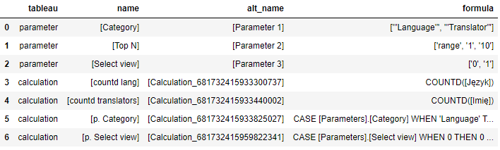Excel file:
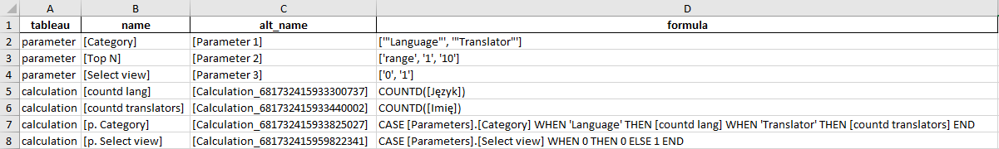Scrabble assistant
16.11.2019 | pandas, zipfile, urllib.request, pickle, datetime, gzip, itertools, string
Scrabble is my favourite word game. I have always wondered how many bingos, bonus 50 points for using all the 7 letters in the rack, I was able to achieve during one game. My personal best was 2 bingos until I realized I could get a little help. Thanks to Python I managed to get 5 bingos. However, I wasn't familiar with any of the bingo words!
The aim of the project is to help gain advantage in Scrabble. The code allows you to check the Polish words you can create out of the letters in your hand.
The source file is the official wordlist available for word games and published by Słownik Języka Polskiego PWN (Polish Language Dictionary). The name of the source file changes periodically so visit the site and make sure you type in the correct one.
The process of executing the code may last a while since the list contains 3 million words.
The first step of the project is to import the list of available words and sort the letters of every word alphabetically. Next, save the file in a compressed gzip format.
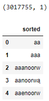import pickle
import gzip
df_sort = pd.read_csv(r'C:\your_path_here\slowa_sort.txt.gz')
merged = pd.merge(df_sort, df, left_index=True, right_index=True)
grouped = merged.groupby('sorted').agg(list)
grouped = grouped.reset_index()
word_dict = grouped.set_index('sorted')['words'].to_dict()
with gzip.open(r'C:\your_path_here\slowa_dict.pickle', 'wb') as f:
pickle.dump(word_dict, f, protocol=pickle.HIGHEST_PROTOCOL)
word_dict

from datetime import datetime
import pickle
# load pickle
start_time = datetime.now()
with gzip.open(r'C:\your_path_here\slowa_dict.pickle', 'rb') as f:
word_dict = pickle.load(f)
time_elapsed = datetime.now() - start_time
print('Time elapsed (hh:mm:ss.ms) {}'.format(time_elapsed))
from datetime import datetime
start_time = datetime.now()
from itertools import combinations
input_txt = 'aabchit'
# input_sort = ''.join(sorted(input_txt))
import string
alphabet = list('aąbcćdeęfghijklłmnńoóprsśtuwyzźż')
blank = False
word_min = 7
word_max = 7
perm_list = set()
if blank:
pass
for char_len in range(word_min, word_max + 1): # len(input_txt) + 2
for x in alphabet:
char_list = list(input_txt + x)
perm = combinations(char_list, char_len)
for i in list(perm):
join_char = ''.join(i)
join_sort = ''.join(sorted(join_char))
perm_list.add(join_sort)
else:
for char_len in range(word_min, word_max + 1): # len(input_txt) + 1
char_list = list(input_txt)
perm = combinations(char_list, char_len)
for i in list(perm):
join_char = ''.join(i)
join_sort = ''.join(sorted(join_char))
perm_list.add(join_sort)
results = []
for i in perm_list:
if i in word_dict:
word = word_dict[i]
results.append(word)
print(results)
time_elapsed = datetime.now() - start_time
print('Time elapsed (hh:mm:ss.ms) {}'.format(time_elapsed))
Examples:
'aabchit' - 7-letter words:
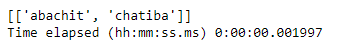
'aaeiklmn' - 8-letter words:
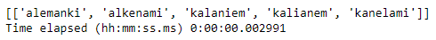'uńchałb' - 4 to 7-letter words:
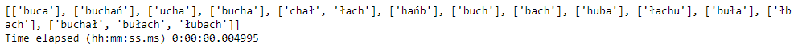'aabcmny' - 2 to 7-letter words:
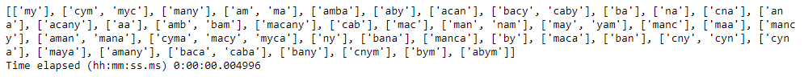Sworn translators web scraping
3.11.2019 | requests, BeautifulSoup, pandas, Tableau, matplotlib, geopandas
The purpose of the excersise is to scrap the data from the website of the Polish Ministry of Justice and to present the results on a map chart using both matplotlib and Tableau.
The object of the web scraping are sworn translators. In Poland, it is a group of professionals that are authorized by the government to translate official documents.
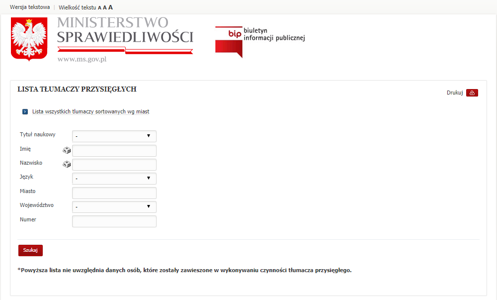The list is being updated periodically, therefore the results of the exercise may differ.
Montenegrin has no results. It was excluded from the web scraping.
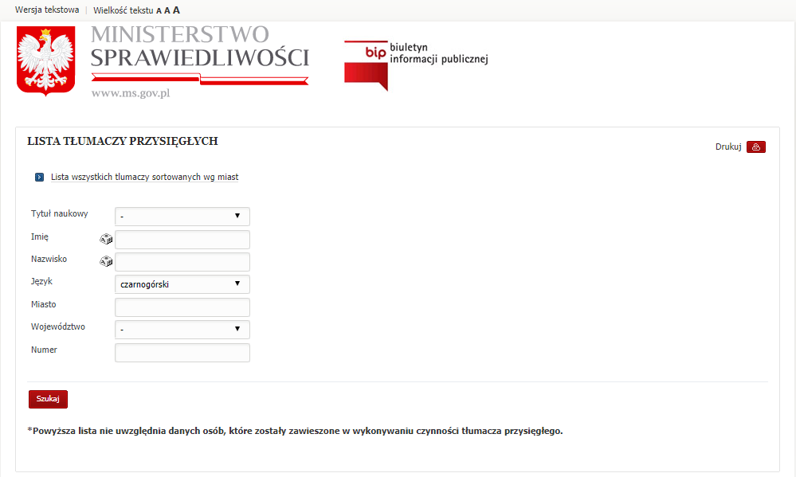The dictionary of the langueages and sample results:
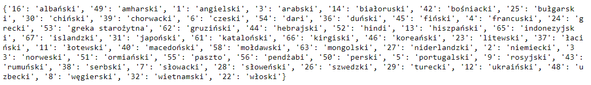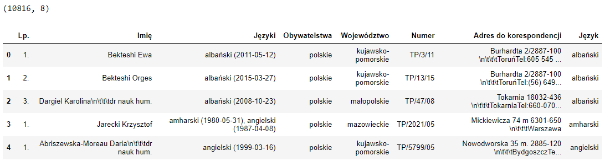
Dataframe shaping:
Dataframe:
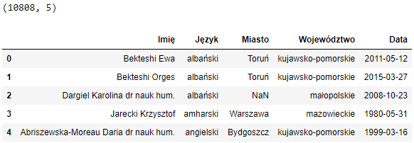Tableau viz (mobile version):


Visualization in Python using geopandas and matplotlib:
Step 1. Import the Polish voivodeship shapefile, the sworn translators data and get the centroids of the polygons.
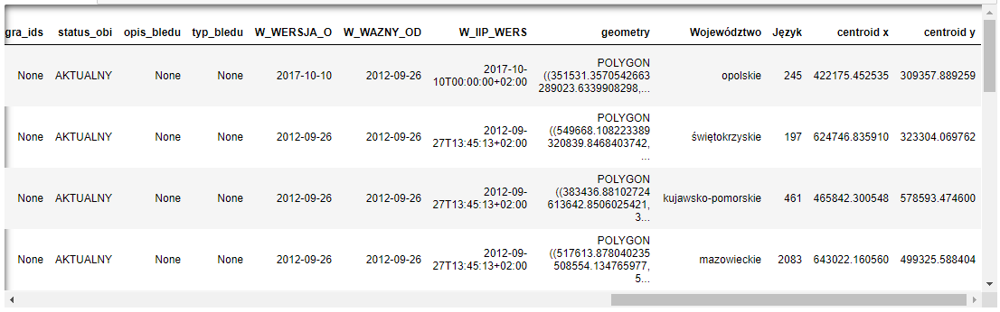
Step 2. Plot the map:
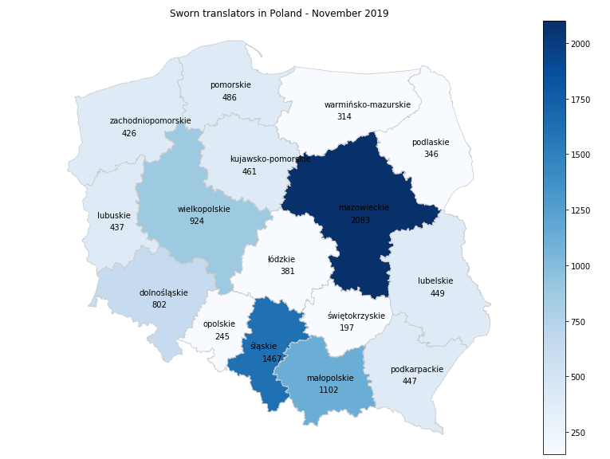
PostgreSQL database
24.10.2019 | psycopg2, pandas, SQL queries
The purpose of the excersise is to connect and query a postgreSQL database.
First, install PostgreSQL on your local system. Next, download and connect to the DVD rental database, which is a common sample database for PostgreSQL used for practice. Follow the instructions on the POSTGRESQL TUTORIAL website to complete the above steps. Finally, install psycopg2 package, e.g. in your Anaconda Prompt terminal.
DVD Rental ER Model
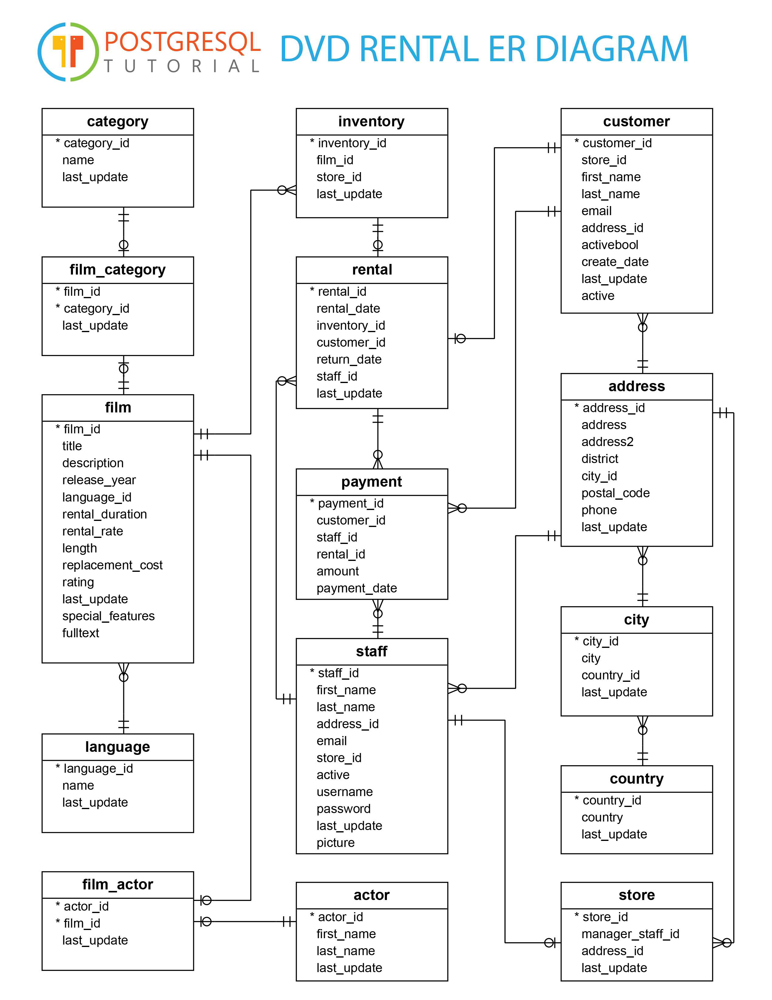Once all set up, use the following code to connect to the database:
The code returns the result of the query in a dataframe structure. Apart from that it returns the number of columns and rows of the table. The HTML display part extends the view in the notebook to 100%. Uncomment the last line to save your query's results in the Excel file.
The result of the query:
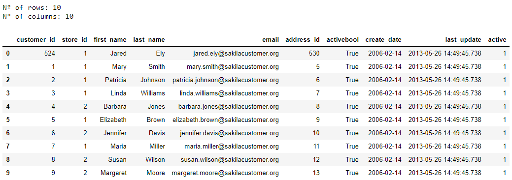Useful queries:
List all the tables and views from the dvdrental.
Find all the columns that contain a specific word.
Get the types of the data in the table.
Excercises to practice:
Excercise 1
Find the title of the film starring Penelope Guiness, Warren Nolte and Rock Dukakis.
Possible solution:
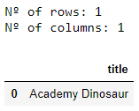
Excercise 2
Find the first name and the last name of the most profitable customer in April 2007.
Possible solution:
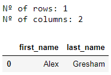
Excercise 3
Find the film categories where the average rental rate is above the average rental rate for all the films.
Possible solution:
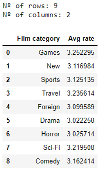
Geocoordinates with geopy
13.09.2019 | geopy, pandas
The purpose of the excersise is to identify geographical coordinates for the list of Polish cities.
Get the list of the cities:
from geopy.geocoders import Nominatim
geolocator = Nominatim(user_agent="yourmail@mail.com")
import pandas as pd
url="https://pkgstore.datahub.io/core/world-cities/world-cities_csv/data/6cc66692f0e82b18216a48443b6b95da/world-cities_csv.csv"
df=pd.read_csv(url)
df=df[['name', 'country']]
df = df.loc[df['country'] == 'Poland']
df = df.rename(columns = {'name':'city'})
df = df.sort_values(by=['city'])
df = df.reset_index(drop=True)
print(df.shape)
df.head()

Use geopy to locate the coordinates of the cities. Bear in mind that geopy allows a limited amount of results to return from the service. Too many queries will result in time out error. Luckily, the limit is high enough to get the list of the cities of our interest for the exercise.
city_list = df.values.tolist()
geo_list = []
lat_list = []
lon_list = []
for i in city_list:
location = geolocator.geocode(i[0], i[1])
lat_list.append(location.latitude)
lon_list.append(location.longitude)
df['latitude'] = lat_list
df['longitude'] = lon_list
df.to_excel (r'C:\your_path_here\poland_coordinates_raw.xlsx', index = None, header=True)
First 12 rows:

The results that we have are not perfect. The final stage of the task is to remove the results that don't interest us, e.g. non-Polish cities or districts of Warsaw.
df = pd.read_excel(r'C:\your_path_here\poland_coordinates_raw.xlsx')
df = df.loc[(df['latitude'] < 49) | (df['latitude'] > 55)]
df = df.drop(df.index[[4,8,10,87,102,125,133,158,187,188,251,263,264,277,312]])
df["city"].replace("Warsaw", value="Warszawa", inplace=True)
df = df.reset_index(drop=True)
df.to_excel (r'C:\your_path_here\poland_coordinates.xlsx', index = None, header=True)
Removed rows:
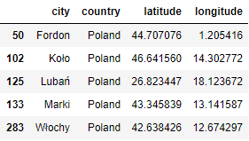
Tableau can also be helpful to identify the geocoordinates of locations. Let's load our poland_coordinates.xlsx file to the application. Next, let's put the cities on the map.
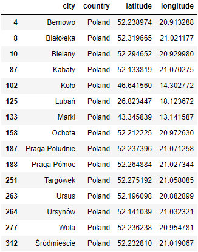Press Ctr + A to select all the cities on the map.

Select View Data and Export All. Voila, the latitude and the longitude generated by the Tableau libraries.
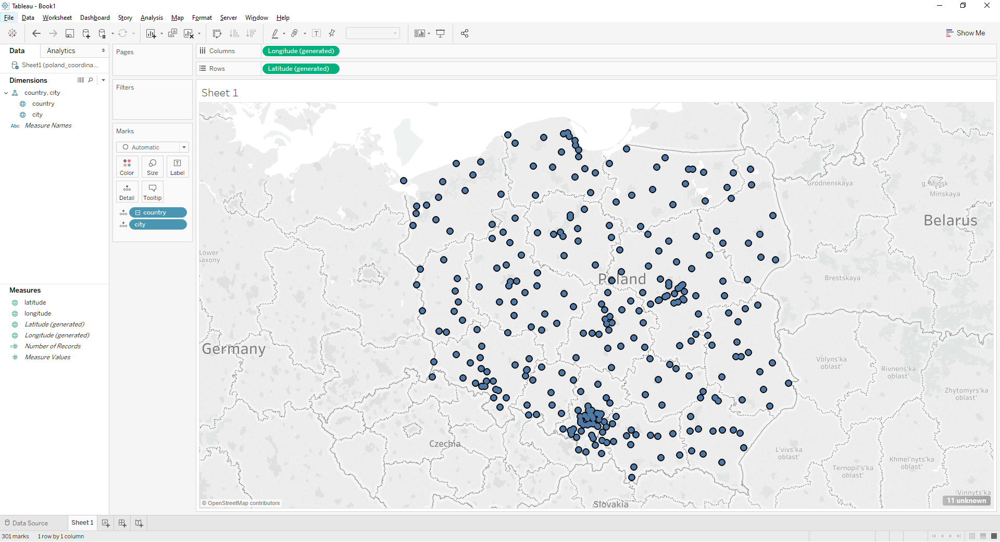Business intelligence tools in job offers
17.08.2019 | requests, BeautifulSoup, pandas, time, regular expression operations (re), Tableau
Before you invest your time in learning a new skill you would often like to know if it is demanded on the market. For example, which business intelligence tool is the most commonly used? To find the answer you need to analyse the job market.
Pracuj.pl is the biggest and the most popular job offer portal in Poland. The old job advertisements are stored in the archives and are publically available.
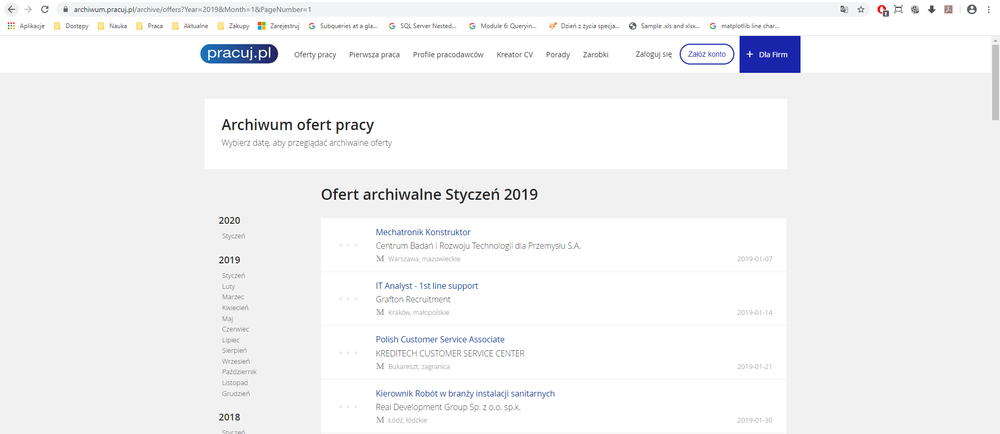The purpose of the excercise is to webscrap the archive of Pracuj.pl and compare the popularity of the selected business intelligence tools. The key words that were used were: 'Tableau', 'Power Bi" and 'Qlik'. The data collection period was January - April 2019.
There are around 1000 pages each month including 50 job offers per page. That is why the webscarping process is time-consuming.
import pandas as pd
import requests
import re
import time
from bs4 import BeautifulSoup
tableau_list = []
powerbi_list = []
qlik_list = []
for num in range(1, 1054):
r = requests.get('https://archiwum.pracuj.pl/archive/offers?Year=2018&Month=1&PageNumber=' + str(num))
if 'Brak ofert do wyświetlenia' in r.text:
break
else:
soup = BeautifulSoup(r.text, 'html.parser')
for a in soup.find_all('a', href=re.compile("oferta")):
try:
r2 = requests.get(a['href'])
if 'Tableau' in r2.text:
tableau_list.append(a['href'])
elif 'Power BI' in r2.text:
powerbi_list.append(a['href'])
elif 'Qlik'in r2.text:
qlik_list.append(a['href'])
except:
print("Connection refused by the server..")
print("Let me sleep for 45 seconds")
print("ZZzzzz...")
time.sleep(45)
print("Was a nice sleep, now let me continue...")
continue
print(num)
num += 1
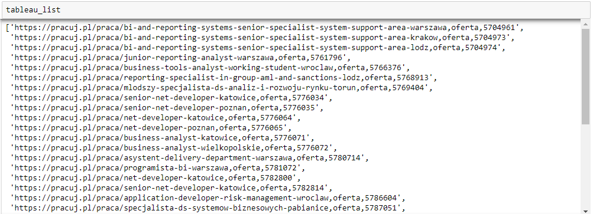
During scraping you shall get multiple timeout errors. The exception in the code aims to omit server rejects. However, in some cases you will have to run the code again. That is why it is advised to use counter in the code to know where to continue and save and load the results ocassionally.
Save the results:
df_tableau = pd.DataFrame(tableau_list, columns = ['Link'])
df_tableau['BI tool'] = 'Tableau'
df_tableau['Data'] = '20180101'
df_tableau['Data'] = pd.to_datetime(df_tableau['Data'])
df_tableau
df_tableau.to_excel(r'C:\your_path_here\tableau_201909.xlsx', index=False)
Load the results:
df_tableau = pd.read_excel(r'C:\your_path_here\powerbi_201801.xlsx')
tableau_list = df_tableau['Link'].tolist()
According to the collected data, Tableau was by far more popular than PowerBi and Qlik in the Jan-Apr 2018 period. However, let's bear in mind that the results may be inaccurate, e.g. scraping may not have included such phrases as 'PowerBi' or 'Qlick' (spelling mistakes do occur in some offers). The excercise should also be expanded to wider timespan and include more popular BI tools like MicroStrategy or SAP.